v24 จอมือถือแสดงผลครบทุกช่อง (7 ต.ค. 2026)
“แก้ไขการแสดงผลหน้าจอมือถือแสดงผลได้ถูกต้องและเหมาะสม” — จากภาพที่เจ้าของทริปส่งมา: ฟอร์มเพิ่มสถานที่ถูกตัดขอบขวา (ช่องเวลาเริ่มล้นจอ, ช่องนาที/ชั่วโมงหดยังกับจุดกลม) และยอด ฿ บนหน้าค่าใช้จ่ายขึ้นบรรทัดใหม่กลางตัวเลข ภาพล่างคือแอปจริงหลังแก้ บนจอ 393×852
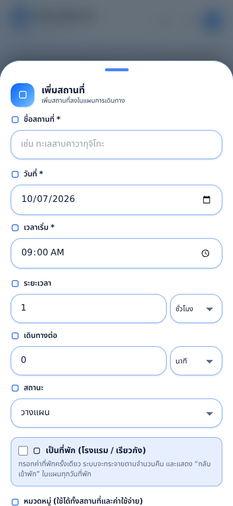
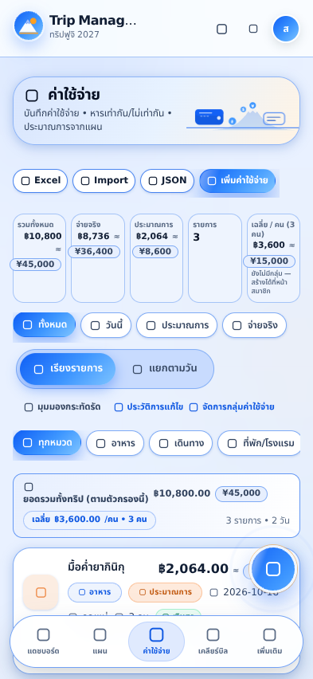
- ฟอร์มเพิ่ม/แก้ไขสถานที่: บนจอ ≤640px ตาราง
grid-cols-2/3ใน#itinerary-formกลายเป็นแถวเต็มความกว้าง — input แบบ time ของ iOS กว้างตายตัว ~207px จึงไม่มีทางลงในคอลัมน์ครึ่งจอได้ การเรียงคนละแถวทำให้ทุกช่องแสดงผลครบ - ช่องตัวเลขระยะเวลา/เดินทางต่อ: กำหนด
min-width: 56pxให้ input ใน.unit-input-row(เดิมflex:1 1 auto; min-width:0ทำให้หดยิบจนเป็นวงกลมเล็ก) - ยอดเงิน KPI:
formatCurrencyHtml()ใหม่ห่อส่วนทศนิยมใน<span class="money-dec">— บนจอ ≤640px ส่วนนี้ถูกซ่อนและยอดอยู่บรรทัดเดียว (white-space:nowrap) เดสก์ท็อปแสดงผลเหมือนเดิมทุกประการ และmobile-checkจะ fail ทันทีถ้ายอดเงินขึ้น 2 บรรทัดหรือถูกตัดเป็น “…” - แถบปุ่มหัวหน้าค่าใช้จ่าย:
.exp-top-actionsขึ้นบรรทัดใหม่บนมือถือแทนการเลื่อนขวาง — ปุ่ม “+ เพิ่มค่าใช้จ่าย” เห็นเต็มปุ่มเสมอ - box-sizing: เพิ่ม
*,*::before,*::after{box-sizing:border-box}ใน CSS ของแอปเอง ไม่พึ่ง Tailwind preflight อย่างเดียว และเปิด preflight ใน harness ให้เหมือนเว็บจริง - ตรวจสอบอัตโนมัติ:
mobile-checkเพิ่มรอบ “add-place” วัดทุก field ในชีตว่าไม่ถูกขอบชีตตัด และกว้างพอกดด้วยนิ้ว ทั้ง 5 ขนาดจอ (375–440px) ผ่านทั้งหมด
v23 แผนการเดินทาง: มุมมองกระทัดรัด (7 ต.ค. 2026)
“ปรับมุมมองให้สามารถเลือกแบบกระทัดรัด โดยแบบกระทัดรัดให้แสดงเฉพาะข้อมูลที่สำคัญเท่านั้น เพื่อให้การแสดงผลบนหน้าจอมือถือมีประสิทธิภาพมากขึ้น” — ภาพคู่ล่างคือวันเดียวกันของทริปเดียวกัน บน iPhone 16 Pro (402×874) จากแอปจริง: กดปุ่ม มุมมองกระทัดรัด บนแถบเครื่องมือ
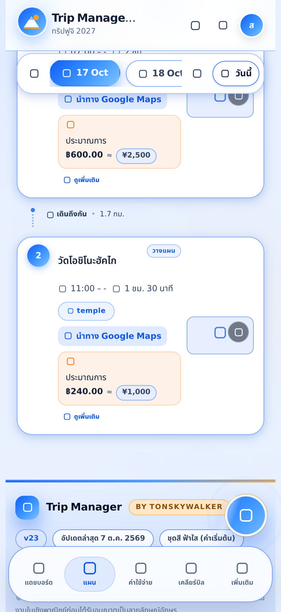
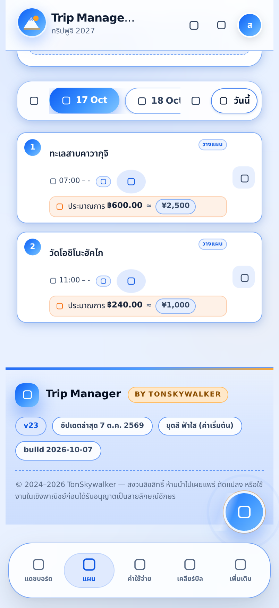
- ข้อมูลที่คงอยู่: ลำดับ, ช่วงเวลา, ชื่อสถานที่, หมวด (เหลือไอคอน), สถานะ, ประมาณการ/ค่าใช้จ่าย และปุ่มนำทาง Google Maps (ย่อเป็นไอคอนกลม)
- ข้อมูลที่พับเก็บ: รูปสถานที่, ที่อยู่, บรรทัดระยะเวลา, ชิปทีม, เช็คอิน–เช็คเอาท์, ปุ่มผูกค่าใช้จ่าย, ปุ่ม “ดูเพิ่มเติม” และเส้นทางเดินทางระหว่างจุด — ยกเว้นคำเตือนเวลาไม่พอ ซึ่งยังโชว์เสมอ
- ยังเข้าถึงเมนูรายการได้: รูปย่อเปลี่ยนเป็นปุ่ม
⋯เล็ก ๆ (แก้ไข / เปลี่ยนสถานะ / เพิ่ม-แก้ค่าใช้จ่าย / ลบ) - จำค่าไว้ในเครื่องนี้: ปุ่มสลับอยู่บนแถบเครื่องมือข้าง “ดูทั้งหมด” จำสถานะผ่าน localStorage ใช้กับทุกวัน/ทุกทริป
- ทดสอบอัตโนมัติ:
mobile-checkเพิ่มรอบ “itinerary-compact” วัดจริงว่าการ์ดเล็กลง ≥20% และข้อมูลที่ต้องพับถูกพับจริง พร้อมยืนยันว่าข้อมูลสำคัญยังกดได้
v22 รอบก่อนหน้า: แผนตกขอบจอ • แก้ไขค่าใช้จ่ายเป็นป๊อปอัป • ปุ่มบันทึกลอย (7 ต.ค. 2026)
สามข้อที่แจ้งมา — รายการในแผนตกขอบขวาบนมือถือ, แก้ไขค่าใช้จ่ายอยากได้เป็นป๊อปอัป, และปุ่มบันทึกของหน้าเพิ่มค่าใช้จ่ายอยากให้ลอยตาม — ภาพด้านล่างคือการรันแอปจริงในเบราว์เซอร์จริงที่ขนาดจอ iPhone 16 Pro (402×874) ก่อนแก้ → หลังแก้
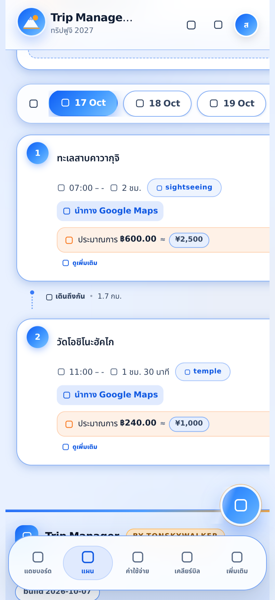
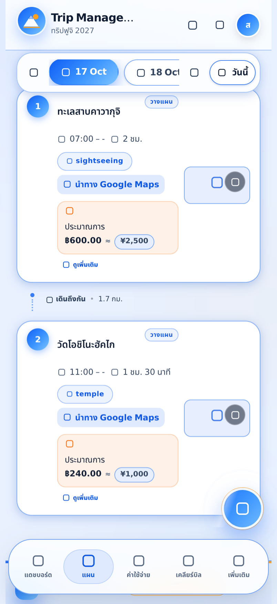
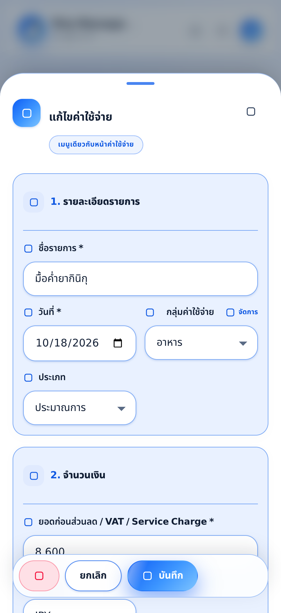
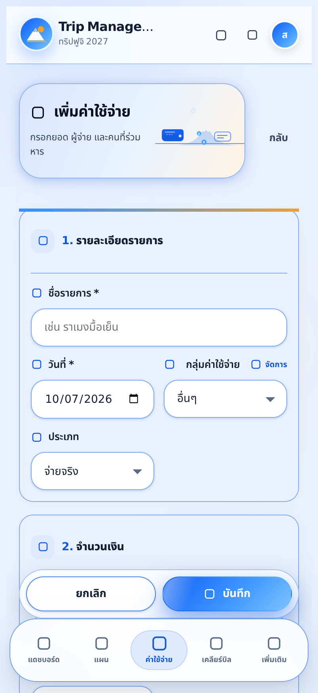
- ต้นเหตุของการตกขอบ: บนจอ ≤1023px เลย์เอาต์แผนเปลี่ยนจาก grid เป็น flex column แต่ค่ายังเป็น
align-items: startของ grid เดิม ทำให้แต่ละบล็อกถูกวัดความกว้างจาก “ความกว้างเต็มที่ไม่ต้องตัดบรรทัด” (max-content) → การ์ดกว้าง ~811px บนจอ 402px แก้เป็นalign-items: stretch+ ลูกทุกตัวwidth: 100% / min-width: 0 - ป๊อปอัปแก้ไข: ใช้ฟอร์มตัวเดียวกับหน้าค่าใช้จ่าย (ฟิลด์/การหาร/VAT/บัตร/ใบเสร็จเหมือนกันทุกช่อง) มีปุ่มลบในป๊อปอัปด้วย และยังมีลิงก์ “เปิดหน้าเต็ม” สำหรับงานยาว ๆ
- ปุ่มบันทึกลอย: แถบปุ่มของฟอร์มเป็น
position: stickyเกาะขอบล่าง (มือถือเว้นระยะเหนือแถบเมนูล่าง, ในป๊อปอัปเกาะขอบชีต) พร้อมscroll-padding-bottomกันไม่ให้ช่องที่กำลังพิมพ์ถูกบังตอนคีย์บอร์ดเปิด - ปุ่ม + มุมขวาล่าง: ซ่อนในหน้าเพิ่ม/แก้ไขค่าใช้จ่าย เพราะทับปุ่มบันทึกที่ลอยอยู่แล้ว
- กันกลับมาเป็นอีก:
tests/browser/mobile-check.mjsเพิ่มขนาดจอ iPhone 16 Pro / iPhone 16 เข้าไปในชุดตรวจทุกครั้ง และ “ของที่ล้นจอ” กลายเป็นข้อผิดพลาดที่ทำให้เทสต์ไม่ผ่าน (v23 ต่อยอด: ตรวจมุมมองกระทัดรัดด้วย)
1 ฟีเจอร์ใหม่ใน v17
ครบตามรายการของ Wanderlog ที่ยังขาด — และไม่กระทบของเดิมแม้แต่หน้าเดียว
- ไกด์ชวนไปที่นี่ (Explore) คลังสถานที่คัดสรร 81 แห่งใน 13 เมือง พร้อมเวลา/ค่าใช้จ่ายที่เหมาะ และปุ่ม “เพิ่มเข้าแผน” หรือ “เก็บเป็นไอเดีย” ในคลิกเดียว
#/trip/:id/explore - ปฏิทินทริป มุมมองเดือนแบบ 6×7 ไฮไลต์วันในทริป ยิงรายการเป็น “แถบ” ต่อวัน กดวันเพื่อเปิดรายละเอียด หรือเพิ่มแผนของวันนั้นได้
#/trip/:id/calendar - ชวนเพื่อน / แชร์ทริป ลิงก์เชิญ + รหัสแบบอ่านง่าย แชร์ผ่าน LINE/WhatsApp/Telegram คัดลอกสรุปทริปและแผนรายวัน พิมพ์เป็น PDF ได้
- นำเข้าจากอีเมลยืนยันการจอง วางข้อความจากอีเมล/แอปจอง ระบบอ่านวันเวลา เที่ยวบิน รหัสยืนยัน และยอดเงินให้ พร้อมคะแนนความมั่นใจ
- แถบออฟไลน์ บอกสถานะข้อมูลจากแคช Firestore และมีปุ่มลองซิงก์ใหม่ ให้แก้ไขงานได้แม้ไม่มีเน็ต
- ไม่มีตัวเลือกชุดสีแล้ว ล็อกเป็นแบรนด์เดียวทุกหน้า เลือกได้เฉพาะโหมด สว่าง / มืด / อัตโนมัติ
2 หน้าจอใหม่ (มือถือ)
ภาพจริงจากการรันแอป (ไม่ใช่ภาพ mock) — ธีม “Sky light” โทนฟ้า–เหลืองบนพื้นสว่าง
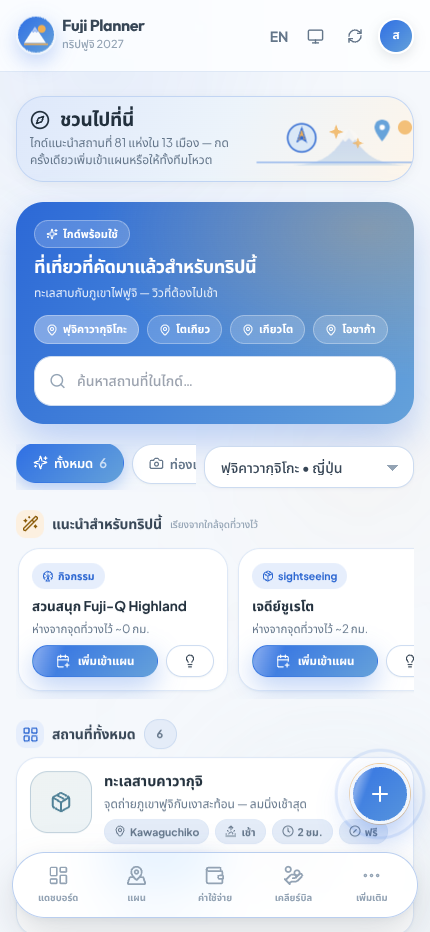
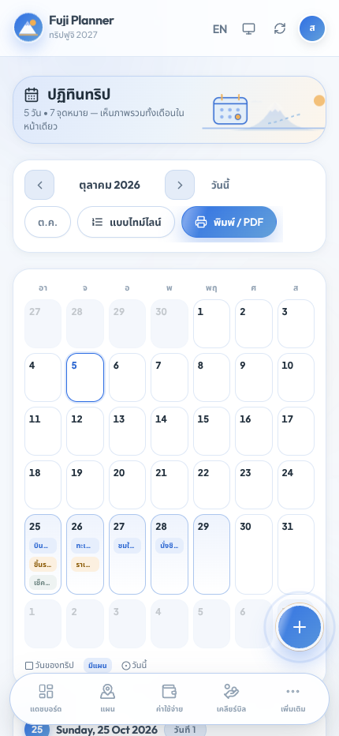
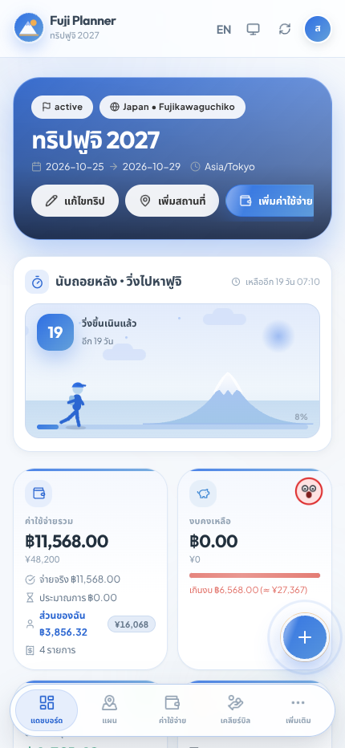
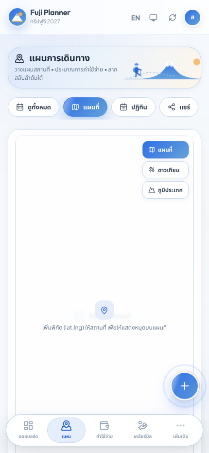
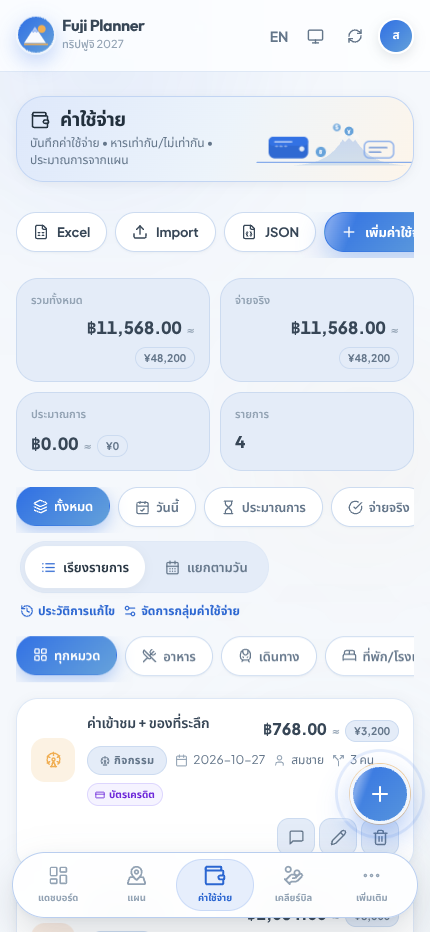
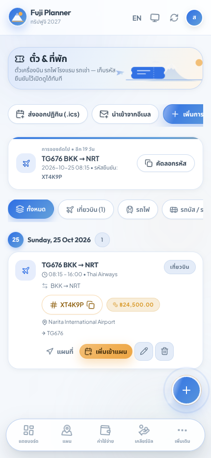
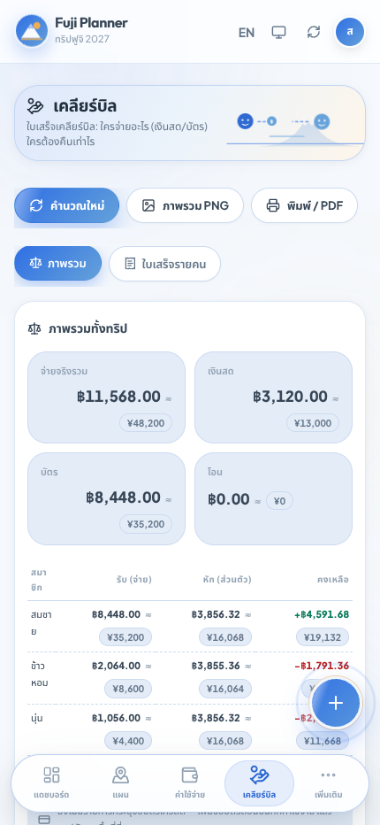
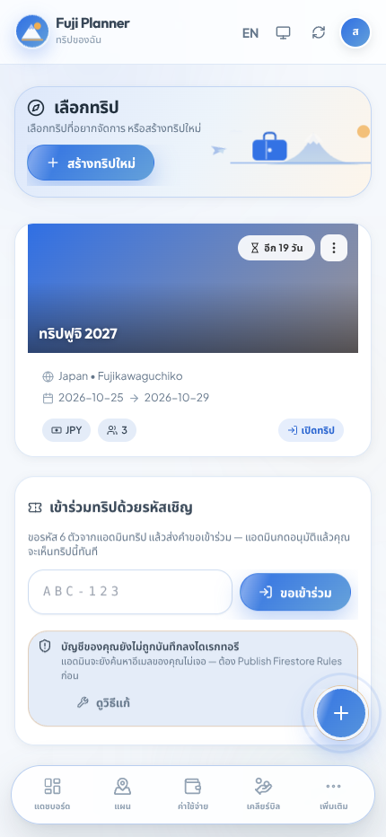
3 เว็บ/เดสก์ท็อปก็ปรับตาม
เมนูเดสก์ท็อป 13 รายการ (เพิ่ม “ชวนไปที่นี่” และ “ปฏิทิน”) พื้นหลัง/การ์ด/ตารางใช้ชุดสีเดียวกับมือถือ — ฟังก์ชันเดิมครบทั้งหมด
4 ก่อน → หลัง (v16 → v17)
โหมดสว่าง/มืดยังเลือกได้เหมือนเดิม แต่สีทั้งชุดถูกเปลี่ยนเป็น “Sky light” และเอาแผงเลือกชุดสีออก
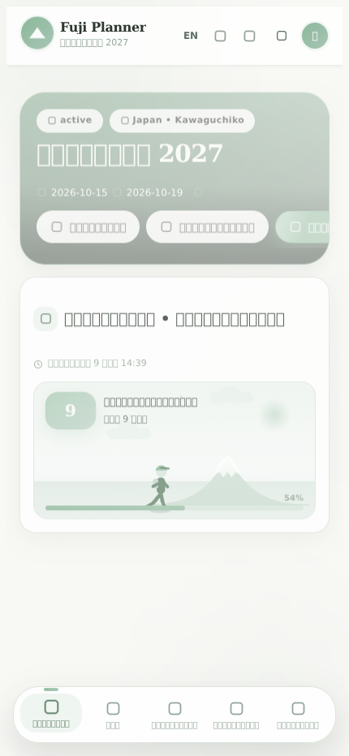
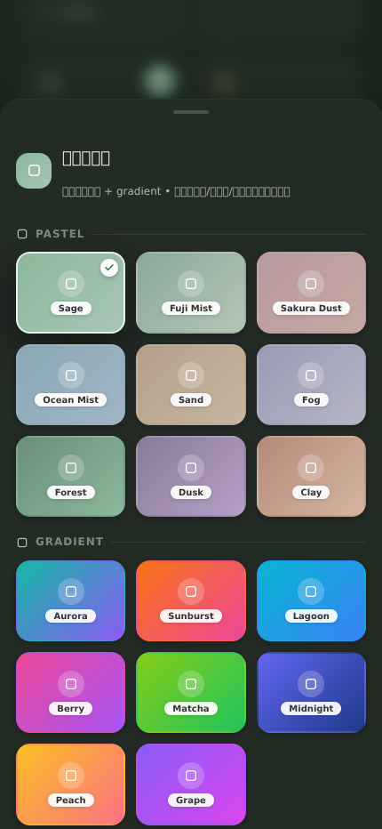
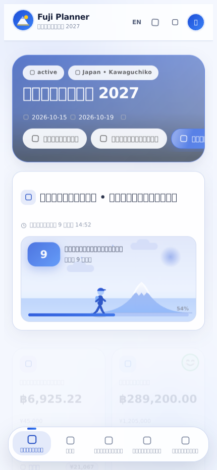
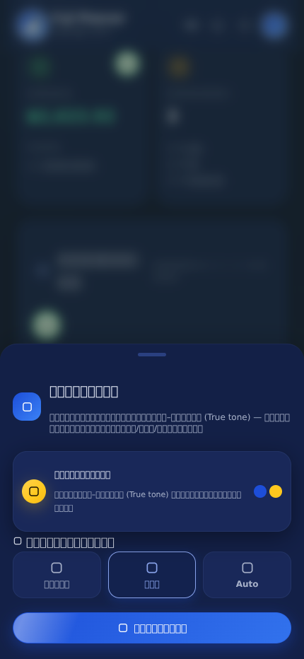